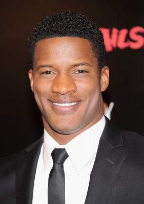
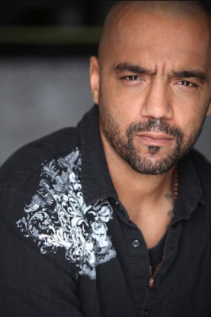
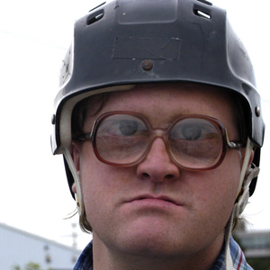
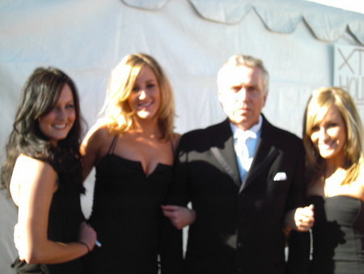

#1100 Felon


 IMDB-Wertung: 7.5 / 10
IMDB-Wertung: 7.5 / 10  Metascore: 58
Metascore: 58 
Als Bauarbeiter Porter in seinem Heim einen Einbrecher stellt, zögert er nicht, diesen mit der Baseballkeule niederzustrecken. Weil der Dieb den tödlichen Hieb aber erst draußen auf der Straße empfing, wandert Porter wegen Totschlags für drei Jahre in Haft. Aus drei Jahren drohen neune bis lebenslänglich zu werden, als Porter bereits auf der Anfahrt zum Gefängnis in einen Fememord unter Gangmitgliedern verwickelt wird. Hilfe kommt allein von seinem vierschrötigen Zellennachbar, einem sechzehnfachen Mörder.
Jahr: 2008
Dauer: 104 Minuten
FSK: 16
Land: USA Studio: Stage 6 FilmsTonspuren: DD5.1 - ,
Untertitel: Deutsch,
Auflösung: 1080p (1920x1040) Größe: 8704 MB
Genre: Krimi, Drama
Regisseur: Ric Roman Waugh
Drehbuch: Ric Roman Waugh
Soundtrack: Gerhard Daum
Darsteller:
 Stephen Dorff als Wade Porter
Stephen Dorff als Wade Porter Marisol Nichols als Laura Porter
Marisol Nichols als Laura Porter Anne Archer als Maggie
Anne Archer als Maggie Larnell Stovall als Viper
Larnell Stovall als Viper Val Kilmer als John Smith
Val Kilmer als John Smith Sam Shepard als Gordon
Sam Shepard als Gordon- Johnny Lewis als Snowman
 Harold Perrineau als Lt. Jackson
Harold Perrineau als Lt. Jackson- Shawn Prince als Todd Jackson
 Chris Browning als Danny Samson
Chris Browning als Danny Samson Nick Chinlund als Sgt. Roberts
Nick Chinlund als Sgt. Roberts Greg Serano als Officer Diaz
Greg Serano als Officer Diaz-  Nate Parker als Officer Collins
-  Mike Seal als Williams
 Mark Sivertsen als Agent Skiletti
Mark Sivertsen als Agent Skiletti- Mara Holguin als Public Defender
- Carrie Fleming als Kelly Collins
 Roman Mitichyan als Swamper Deputy
Roman Mitichyan als Swamper Deputy- Brittany Perrineau als Stacy Jackson
- Harry Zimmerman als LA Judge
 Kevin Wiggins als SQ Guard
Kevin Wiggins als SQ Guard- Brian Keith Gamble als Joe
- Jesus Jr. als Lead Hispanic
 John Trejo als ADSEG Guard
John Trejo als ADSEG Guard- Christien Tinsley als Belligerent Man
- Bill Allen als Drunk Driver
 Esodie Geiger als Female Judge
Esodie Geiger als Female Judge Tait Fletcher als White Inmate
Tait Fletcher als White Inmate- Antonio Leyba als Gonzalez
 John Koyama als Asian Fighter
John Koyama als Asian Fighter Jermaine Washington als Large Black Inmate
Jermaine Washington als Large Black Inmate-  Mike Smith als Rooker
 Christopher Dempsey als Deputy District Attorney
Christopher Dempsey als Deputy District Attorney- Joshua Lucera als Lead Jail Riot Guard
 Frank Bond als Doctor , uncredited
Frank Bond als Doctor , uncredited- Jim Burleson als Correction's Officer , uncredited
- Tracy Melhorn als Court room patron , uncredited
-  Z. Ray Wakeman als LA County Trustee , uncredited
- Vincent Miller als Michael Porter
- Jake Walker als Warden Harris
- Louie Pescador als Oso
- Gabriel 'Bam Bam' Merendon als Oso's Lieutenant
- Adam Taylor als Investigator Hammond
- Rosalia De Aragon als IRC Deputy
- Ivan Brutsche als Invited Guard
- Cynthia Ruffin als Female Guard
- Richard Caruso als Gang Investigator
- Eric Gomez als Bodie
- Elton Walker als Corn Rows
- Adrian Ponce als Hispanic Fighter One
Datei: X:\2008(A-F)\Felon (2008, FSK16, 1920x1040).mkv seit 20.05.2015
Festplatte: HD 2007(A-Z)-2008(A-F)
 Es gibt insgesamt 66 Filme in der Gruppe '2008(A-F)'
Es gibt insgesamt 66 Filme in der Gruppe '2008(A-F)'